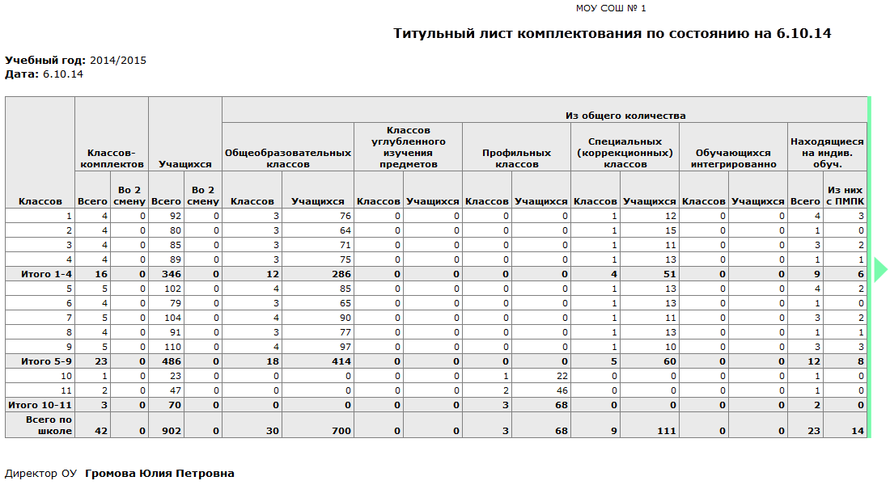
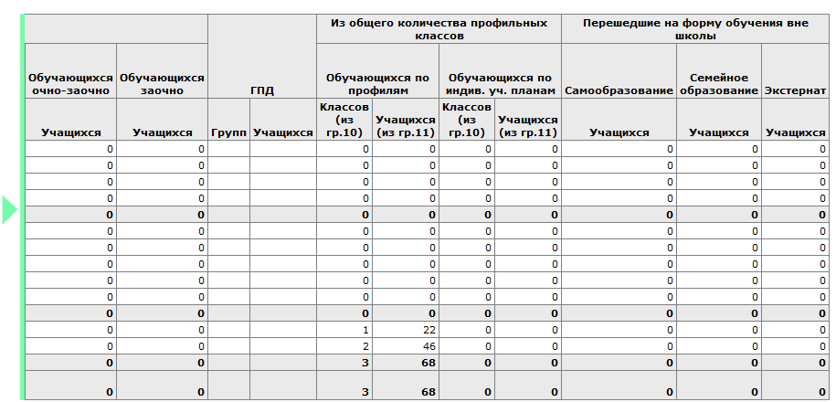

Внимание! Для корректной работы отчёта необходимо заполнить поле Форма обучения в личных карточках учащихся.
Согласно форме обучения, учащиеся делятся на следующие группы:
| 1. | Учащиеся с формами обучения "Самообразование", "Семейное образование", "Экстернат" не считаются в общей численности (т.е. не входят в графу "Учащихся"), согласно ФЗ № 273 "Об образовании", т.к. они обучаются вне школы.
|
| 2. | Учащиеся с одной из индивидуальных форм обучения не считаются в классах (общеобразовательных, углубленного изучения, профильных, СКО), однако, считаются в общей численности (т.е. входят в графу "Учащихся").
|
| 3. | Учащиеся с формой обучения "Очная" считаются в классах (общеобразовательных, углубленного изучения, профильных, СКО).
|
| 4. | Учащиеся с формами обучения "Очно-заочная" и "Заочная" не считаются в классах, а считаются в двух отдельных соответствующих графах.
|
"Интегрированные учащиеся" - это учащиеся в классе "не СКО", у которых:
| · | Форма обучения = "Очная",
|
| · | и Программа обучения является одной из "адаптированных" программ, то есть имеет значение, отличное от:
|
| - Основная общеобразовательная ФГОС,
|
| - Основная общеобразовательная ФК ГОС,
|
| - ФГОС среднего общего образования.
|
Графа "Находящиеся на индив.обучении->Из них с ПМПК" рассчитывается также на основании поля "Программа обучения" (в графе учитываются дети с любой из "адаптированных" программ). В данной графе никак не учитывается поле "Решения комиссий", поэтому заполнять его не обязательно.
Информация в столбце "Группы продлённого дня" - не может быть рассчитана автоматически, её можно внести вручную после переноса отчёта в MS Excel или OpenOffice Calc.
Данный отчёт, кроме учащихся, зачисленных в классы, также учитывает учащихся, прикреплённых к параллели (если таковые есть в школе).
Подсчёт детей различных категорий также происходит в отчёте "Информация о численности детей".
Пример отчёта:

